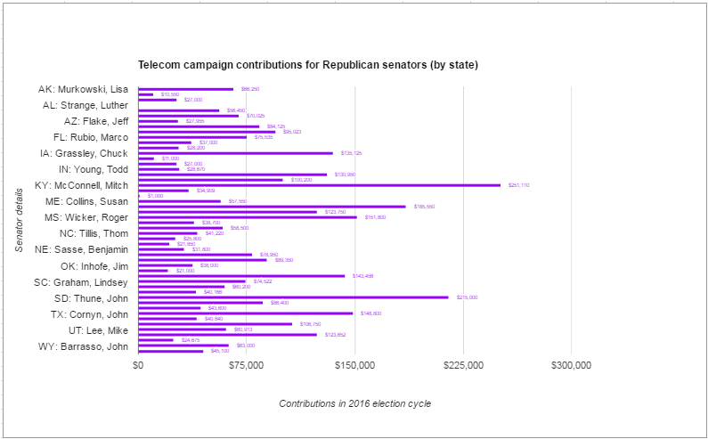

The below chart is based on data from this story in Verge: The 265 members of Congress who sold you out to ISPs, and how much it cost to buy them
Below is the data as a table:
| MEMBER | PARTY | STATE | TOTAL |
| Murkowski, Lisa | Republican | AK | $66,250 |
| Sullivan, Daniel | Republican | AK | $10,550 |
| Shelby, Richard | Republican | AL | $27,000 |
| Strange, Luther | Republican | AL | $0* |
| Boozman, John | Republican | AR | $56,450 |
| Cotton, Tom | Republican | AR | $70,025 |
| Flake, Jeff | Republican | AZ | $27,955 |
| McCain, John | Republican | AZ | $84,125 |
| Gardner, Cory | Republican | CO | $95,023 |
| Rubio, Marco | Republican | FL | $75,535 |
| Perdue, David | Republican | GA | $37,000 |
| Ernst, Joni | Republican | IA | $28,200 |
| Grassley, Chuck | Republican | IA | $135,125 |
| Crapo, Mike | Republican | ID | $11,000 |
| Risch, Jim | Republican | ID | $27,000 |
| Young, Todd | Republican | IN | $28,670 |
| Moran, Jerry | Republican | KS | $130,950 |
| Roberts, Pat | Republican | KS | $100,200 |
| McConnell, Mitch | Republican | KY | $251,110 |
| Cassidy, Bill | Republican | LA | $34,909 |
| Kennedy, John | Republican | LA | $1,000 |
| Collins, Susan | Republican | ME | $57,550 |
| Blunt, Roy | Republican | MO | $185,550 |
| Cochran, Thad | Republican | MS | $123,750 |
| Wicker, Roger | Republican | MS | $151,800 |
| Daines, Steve | Republican | MT | $38,700 |
| Burr, Richard | Republican | NC | $58,500 |
| Tillis, Thom | Republican | NC | $41,220 |
| Hoeven, John | Republican | ND | $25,800 |
| Fischer, Debra | Republican | NE | $21,850 |
| Sasse, Benjamin | Republican | NE | $31,800 |
| Heller, Dean | Republican | NV | $78,950 |
| Portman, Rob | Republican | OH | $89,350 |
| Inhofe, Jim | Republican | OK | $38,000 |
| Lankford, James | Republican | OK | $21,000 |
| Toomey, Patrick | Republican | PA | $143,456 |
| Graham, Lindsey | Republican | SC | $74,522 |
| Scott, Tim | Republican | SC | $60,200 |
| Rounds, Mike | Republican | SD | $40,166 |
| Thune, John | Republican | SD | $215,000 |
| Alexander, Lamar | Republican | TN | $86,400 |
| Corker, Bob | Republican | TN | $43,600 |
| Cornyn, John | Republican | TX | $148,800 |
| Cruz, Ted | Republican | TX | $40,840 |
| Hatch, Orrin | Republican | UT | $106,750 |
| Lee, Mike | Republican | UT | $60,913 |
| Johnson, Ron | Republican | WI | $123,652 |
| Capito, Shelley | Republican | WV | $24,675 |
| Barrasso, John | Republican | WY | $63,000 |
| Enzi, Mike | Republican | WY | $45,100 |